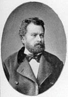

(1840 – 1888)

Bir Tanzimat aydını olarak Türkiye'deki aydınlanma çağının öncülerinden olan Namık Kemal yazdığı şiirler, tiyatro oyunları ve romanlarla aslında "ulusal" bir edebiyatı başlatan yazarlardandır. Yapıtlarıyla; hak, adalet, özgürlük, millet, Millet Meclisi gibi kavramların önce aydınlar, sonra da halk katında yayılmasına büyük katkıda bulunmuştur.
"Vatan Şairi" olarak anılan ve düşünceleriyle Atatürk başta olmak üzere, yeni Türkiye'yi kuran herkesi etkilemiş olan şair ve yazar Namık Kemal 21 Aralık 1840 tarihinde Tekirdağ'da dünyaya geldi. Babası Yenişehirli Mustafa Asım Bey, annesi bir Arnavut olan Fatma Zehra Hanım'dır. Tekirdağ'daki evlerinin civarında bulunan tekkenin şeyhi Tokatlı Hafız Ali Rıza Efendi kendisine "Mehmed Kemal" adını verdi. Çocukluğu annesinin babası Abdülatif Paşa'nın yanında geçti. Namık Kemal dedesi Abdülatif Paşa'nın değişik kentlerde görev yapması nedeniyle düzenli bir eğitime devam edemedi. Özel dersler aldı ve kendi kendini yetiştirmeye çalıştı. Arapça ve Farsça öğrendi.
1855'te babasının Bulgaristan'da Filibe mal müdürü, dedesinin de Sofya kaymakamı olması dolayısıyla Sofya'ya gitti. Sofya'da evlerine ziyarete gelen dedesinin arkadaşı şair Binbaşı Eşref Bey şiirlerini okuduktan sonra Mehmed Kemal'e "yazıcı, katip" anlamlarındaki "Namık" adını verdi. O günden sonra Namık Kemal olarak anılmaya başladı. 18 yaşına kadar kaldığı Sofya'da komşuları Niş Kadısı Mustafa Ragıp Efendi'nin kızı Nesime Hanım ile evlendi. Bu evlilikten Feride ve Ulviye adında iki kızı ve Ali Ekrem adında bir oğlu dünyaya geldi.
1857'de İstanbul'a döndü ve Bab-ı Ali Tercüme Odası'nda stajyer olarak memurluğa başladı. 1858'de büyükannesi Mahmude Hanım'ı, 1859'da büyükbabası Abdülatif Paşa'yı kaybetti. Babasının ikinci evliliğini yaptığı Dürrüye Hanım'ın Kocamustafapaşa'daki evinde yaşadı. Babasının bu evliliğinden Naşit adında bir kardeşi oldu. 1859'da Gümrük Kalemi'nde çalışmaya başladı.
İlk şiirlerini Sofya'da yazan Namık Kemal İstanbul'a geldiğinde şairler arasında kısa sürede tanınmıştı. Henüz Batı edebiyatı ile bir teması yoktu. İstanbul'da Divan Edebiyatı geleneğini takip eden şairlerle tanıştı. Arap ve Fars edebiyatlarını öğrenmeye çalıştı. Leskofçalı Galip Bey adlı şair ile yakın dostluk kurdu. Bu şairin başkanlığında kurulan Encümen-i Şuara adlı şairler topluluğuna katıldı.
1863'ten itibaren dört yıl yeniden Tercüme Odası'nda görev aldı. Bu yeni görevi sırasında Batı'yı tanıyan kimselerle tanışma imkanı buldu ve gözlerini Batı kültürüne çevirdi. Edebiyatta Batılılaşmanın ilk adımlarını atan İbrahim Şinasi ile tanışması hayatını değiştirdi. Sanat ve hayat görüşü değişti. Batı edebiyatını öğrenmeye başladı, ilgisi nesire yöneldi. Tarih ve hukuk alanında kendini geliştirmeye çalıştı. Tercüme odasının bir katibinden Fransızca dersleri aldı. Tasvir-i Efkâr'da fıkra ve tercüme yazılar kaleme aldı. İlk defa Şinasi'de gördüğü "hak, millet, vatan, hürriyet, millet meclisi" gibi kelimeleri yaygınlaştırdı.
1865'te Şinasi Tasvir-i Efkâr Gazetesi'ni kendisine bırakarak Fransa'ya gidince Namık Kemal tek başına gazeteyi çıkardı. Aynı dönemde (daha sonra "Yeni Osmanlılar Cemiyeti" adını alacak olan) İttifak-i Hakimiyet adlı gizli derneğin kurucuları arasına girdi. Derneğin amacı bir anayasa hazırlanmasını ve parlamenter bir yönetim sistemi kurulmasını sağlamaktı. Namık Kemal gazetesinde bu görüşler doğrultusunda ve hükümet aleyhine şiddetli makaleler yayımladı. "Şark Meselesi" üzerine yazdığı bir makale gazetenin 1867'de kapatılmasına ve kendisinin Erzurum vali muavini olarak atanmasına yol açtı.
Namık Kemal hükümet tarafından gönderildiği Erzurum'a gitmek yerine Paris'e kaçtı. O ve arkadaşlarını Paris'te yaşayan Mısırlı prens Mustafa Fazıl Paşa davet etmiş ve maddi himayesine almıştı. M. Fazıl Paşa'nın desteğiyle Londra'da "Muhbir" adlı gazeteyi çıkardılar ancak Namık Kemal, Ali Suavi ile yaşadığı anlaşmazlık üzerine Muhbir'den ayrıldı. Aynı yıl Sultan Abdülaziz Uluslararası Paris Sergisi'ni görmek üzere şehre gelince Fransız hükümeti Genç Osmanlılar'ı ülkeyi terk etmeye davet etti. Namık Kemal bazı arkadaşlarıyla birlikte Londra'ya gitti ve orada "Hürriyet Gazetesi"ni çıkardılar. Bir süre sonra arkadaşları ile arası bozulan Namık Kemal 1870'te Sadrazam Ali Paşa ile barışıp yurda döndü.
Siyasetten uzak durmak, yazı yazmamak koşuluyla affedilmiş olan Namık Kemal İstanbul'a döndükten sonra "Diyojen" adlı mizah dergisinde imzasız fıkralar yazdı. Sadrazam Ali Paşa'nın ölümünden sonra 1872'de "İbret Gazetesi"ni çıkararak yeniden muhalefete başladı. Gazete sık sık kapatıldı ve sonunda sadrazam Mahmut Nedim Paşa'yı eleştiren yazılar yüzünden Namık Kemal İstanbul'dan uzaklaşması için mutasarrıf olarak Gelibolu'ya atandı.
Birkaç ay kaldığı Gelibolu'da "Vatan yahut Silistre" adlı oyunu ile "Evrâk-ı Perişan" adlı eserini tamamladı. Gelibolu'nun bazı sorunları ile ilgilendi ve su davasını halletti. Rumeli fatihi Gazi Süleyman Paşa'nın Bolayır'daki kabrini ziyaret etti. Ebüzziya Tevfik Bey'e burada gömülmeyi vasiyet etti.
Osmanlı hükümeti tarafından açığa alınan Namık Kemal 1872'nin son günlerinde Gelibolu'dan İstanbul'a döndü ve İbret gazetesininin başına geçti. Çok geçmeden bir makalesi nedeniyle hakkında soruşturma açılıp gazetesi tekrar kapatılınca tiyatro ile ilgilenmeye başladı. Vatan yahut Silistre oyunu 1 Nisan 1873 gecesi İstanbul'da Güllü Agop'un Gedikpaşa'daki tiyatrosunda sahnelendi. Oyunun sahnelenmesi halkı coşturup olaylar çıkmasına neden oldu. Bu konuda İbret'te yayımlanan yazılardan sonra gazete, bir daha çıkmamak üzere kapatıldı; Namık Kemal ve dört arkadaşı yargılanmadan sürgüne gönderildiler.
Namık Kemal'in Magosa (Kıbrıs) sürgünü 38 ay sürdü. Magosa'da son derece olumsuz koşullar altında yaşamak zorunda kaldı, pek çok kez sıtmaya ve başka hastalıklara yakalandı. Birkaçı dışında eserlerinin tamamını, bu dönemde Kıbrıs'ta yazdı.
Bu dönemde yazdığı iki roman İntibah (1876) ve Cezmi (1880) Türk edebiyatının Batılı anlamdaki ilk başarılı romanları arasında sayılmaktadır. (Batıda da romanın yenileşme çağına denk gelen bu eserler, elbette Batılı romanlarla kıyaslanarak değil, ulusal edebiyatımız içindeki yerleri göz önüne alarak değerlendirilmelidir.) Bu açıdan bakıldığında her iki roman da kendinden sonra yazılan Türk romanlarına yeni kapılar açmış yapıtlardır.
Namık Kemal, sürgün dönüşü İstanbul'da bir kahraman gibi karşılandı. Tahta çıkışından 93 gün sonra akıl sağlığının bozuk olduğu gerekçesiyle tahttan indirilen V. Murat'ın yerine Osmanlı tahtına oturan II. Abdülhamit ilk Osmanlı Anayasası'nı oluşturmak için bir komisyon kurdu. Namık Kemal bu komisyonun üyelerinden biri oldu. Ancak şair, padişahın aleyhine bir beyit yazıp bunu mecliste okuyunca mahkemede yargılandı. Söylediği Arapça beyit "Bir şey ikilendi mi muhakkak üçlenir de." anlamındaydı ve tıpkı Abdülaziz ve V. Murat gibi Abdülhamit'in de tahttan indirilebileceğini ima ediyordu. Namık Kemal asayişi bozduğu gerekçesiyle suçlu bulunup altı ay hapis cezasına çarptırıldıysa da sonradan beraat etti. Girit Adası'nda ikamete mecbur edildi. Kendi isteği üzerine ikameti Midilli Adası'na çevrildi. İki buçuk yıl sonra Midilli mutasarrıfı olarak görevlendirildi. Midilli'de tanıdığı genç yaştaki Hüseyin Hilmi Paşa'yı ömrü boyunca koruyup destekledi. Hüseyin Hilmi Paşa yıllar sonra 1909'da sadrazamlığa kadar yükselmiştir.
1879'dan itibaren Midilli'deki beş yıl süren görevi sırasında kaçakçılığı önledi; hazine gelirini artırdı. Yirmi Türk ilkokulu açtı. Türklerin hayat seviyesini yükseltti. Adalarda yaşayan Türk ahalisinin sorunlarını dile getiren bir rapor hazırlayıp Bab-ı Âli'ye sundu. 1882'de Nişan-i Osmanlı madalyası ile ödüllendirildi. "Vaveyla", "Murabba", "Vatan Mersiyesi" gibi şiirlerini burada yazdı. Magosa'da yazmaya başladığı Celaleddin Harzemşah adlı eserini tamamlayamadı.
Namık Kemal'in Midilli'de kaçakçılıkla mücadelesinden çıkarları zarar görenlerin şikayetinden sonra 1884'te Rodos mutasarrıfı oldu. Rodos adasındaki çalışmaları da padişahın imtiyaz madalyası ile ödüllendirildi. Rodos'ta Osmanlı tarihi hakkında bir eser yazmaya başladı. İngiliz ve Yunanlıların şikayeti üzerine 1887'de Rodos'taki görevi sona erdi ve Sakız Adası mutasarrıfı oldu.
Sakız Adası'nın havası nedeniyle rahatsızlanan Namık Kemal, 2 Aralık 1888 günü 48 yaşında vefat etti. Adada bir caminin haziresine defnedildi. Arkadaşı Ebüziyya Tevfik, şairin Bolayır'da gömülme arzusunu padişah II. Abdülhamit'e iletince naaşı Gelibolu'ya nakledildi. Bolayır'da Orhan Gazi'nin oğlu Süleyman Paşa'nın türbesinin yanına gömüldü. Birkaç yıl sonra Sultan Abdülhamit, planını Tevfik Fikret'in çizdiği bir türbe yaptırdı. 1912 Mürefte-Şarköy depreminde sütunlar zedelendiği için halen mermer kaplı bir kabirde bulunmaktadır.
Seçme Romanları: İntibah (1876), Cezmi (1880)